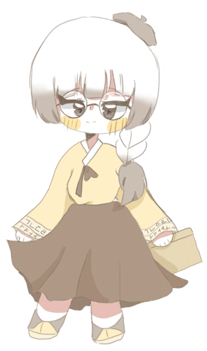

1장 세종의 눈
하고 싶은 말이 있어도 제 뜻을 펴지 못하는 백성이 많았어요. 그림책 속 세종은 “누구나 읽고 쓸 수 있는 새로운 글자를 만들었도다”라고 말해요.
글자를 알면 백성의 생활은 어떻게 달라질까요?
사료 A · C한글은 누구를 위해 만들어졌을까요?
제작 교육뮤지컬 꿈꾸는 치수쌤 · 작곡 김아름 · YouTube에서 보기
세종과 훈민정음은 실제 역사예요. 영상 속 SNS·상소TV·챌린지는 오늘의 모습을 빌려 온 상상이에요.
영상 속 세 인물이 새 글자를 어떻게 바라보았는지 살펴봐요.
하고 싶은 말이 있어도 제 뜻을 펴지 못하는 백성이 많았어요. 그림책 속 세종은 “누구나 읽고 쓸 수 있는 새로운 글자를 만들었도다”라고 말해요.
글자를 알면 백성의 생활은 어떻게 달라질까요?
사료 A · C
최만리·신석조·김문 등 일부 신하들은 중국과의 관계, 한자 공부와 학문을 걱정했어요. 세종은 이두처럼 새 글자도 백성을 편하게 하려는 것이라고 답했어요.
두 주장은 각각 무엇을 중요하게 생각했나요?
사료 B
신숙주와 성삼문이 서당 아이들과 함께 새 글자의 좋은 점을 알릴 방법을 찾아요(영상 속 상상). 두 사람은 실제로 해례본을 함께 지은 집현전 학자예요.
여러분이라면 한글의 어떤 점을 알리겠어요?
사료 D · E
02 훈민정음‘훈민정음’은 새 글자의 이름이면서, 그 글자를 설명한 책의 이름이에요.
초성 17자 + 중성 11자. 오늘날은 그중 24자를 써요.
1443년 창제 · 사료 A첫소리(초성)·가운뎃소리(중성)·끝소리(종성)를 합해 한 글자를 이뤄요.
자음 기본자는 소리 낼 때의 입·혀·목 모양을, 모음 기본자는 하늘·땅·사람을 본떴어요. — 『훈민정음』 해례본 (사료 D)
당시의 기록(1차 사료)과 오늘날 기관의 해설을 구분해서 읽어요.
실록 날짜는 음력이에요. 1443년 기사는 “이달에”라고만 적어 정확한 창제일을 단정하지 않아요. 한글날 10월 9일은 해례본 서문의 날짜(음력 9월 상순)를 양력으로 바꾼 날이에요.
PPT 19장과 활동지 3장(A4)이에요. 그림책 속 인물 그림을 함께 담았어요.
학년과 교과에 맞게 필요한 부분만 골라 쓰세요.